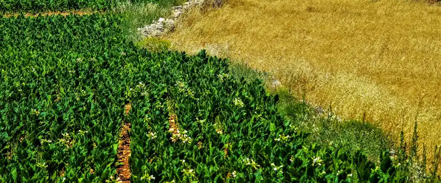

Cultivating Sustainable Agriculture...
Cultivating Sustainable Agriculture...
Stackly Agriculture bridges regenerative organic farming with real-time IoT crop telemetry. We empower progressive farm managers with intelligent field insights and provide wholesale buyers with 100% certified pesticide-free harvest batches.
Acres Cultivated
Certified Organic
Farm to Wholesale


Founded with a vision to heal farmland and revolutionize food traceability, Stackly Agriculture has grown from a humble organic cluster in Salem, Tamil Nadu, to a state-of-the-art agricultural network spanning thousands of fertile hectares.
Our closed-loop farming model combines soil regeneration, pollinator conservation, solar micro-irrigation, and satellite imagery to ensure resilient yields without exhausting earth's vital minerals.
Microbial bio-fertilizers replenishing natural humic layers.
Saving 64% water through solar automated valve controllers.
From seed propagation and autonomous field telemetry to temperature-controlled logistics, we support growers and institutional buyers alike.

Cultivating non-GMO heirloom grains, pulses, and nutrient-dense seasonal staples using 100% natural bio-composts.
Explore Crops ➔
Multispectral drone crop scouting, IoT soil moisture probes, and predictive micro-climate weather forecasting.
View Agtech ➔
Ethical open-pasture rotational grazing producing nutrient-rich A2 certified raw dairy and artisan farm cheese.
Pasture Care ➔
Direct farm-to-warehouse cold chain transport guaranteeing maximum freshness and zero post-harvest spoilage.
Supply Chain ➔We eliminate the opacity and chemical dependency of industrial farming with open telemetry, verifiable quality testing, and direct grower contracts.
Every crop lot undergoes comprehensive multi-residue gas chromatography screening before dispatch.
Dedicated standalone portals for Farm Managers managing field labor, and Produce Buyers tracking shipment lots.
Integrated honeybee colonies across all acreage, boosting pollination rates by 38% naturally.

Straight from our regenerative soils to wholesale markets, commercial kitchens, and natural food retailers.

Freshly picked crisp bell peppers, heritage carrots, broccoli, and spinach grown in mineral-rich compost.
Order Wholesale Batch
Pure whole milk from free-roaming indigenous dairy cows grazing on unsprayed clover and mountain grass.
Reserve Dairy Lot
Unpasteurized, pollen-rich raw honey harvested from our organic farm apiary with zero sugar syrup adulteration.
Order Honey BatchReal feedback from our agricultural partners who rely on Stackly farm harvests week after week.
"Switching our farm-to-table restaurant chain to Stackly’s certified heirloom crops was the best culinary decision we made. The flavor density and crispness are unmistakably authentic."
"The Produce Buyer dashboard gives our supermarket co-op exact temperature telemetry and pesticide testing certs before the trucks even arrive at our Salem hub. Absolute gold standard."
"Stackly’s precision irrigation and bio-fertilizer guidance increased our contract farmer yields by 27% while slashing water consumption. It's the future of Indian agriculture."
Our team brings over four decades of combined field biology, soil chemistry, and smart farming operations.

Spearheading 12,000+ acres of organic crop rotations and automated micro-drip networks across Tamil Nadu.
Ph.D. in Microbial Soil Ecology, developing proprietary non-synthetic compost inoculants and bio-pest controls.
Overseeing ISO 22000 and NPOP certified chemical residue testing across all wholesale harvest dispatch lots.